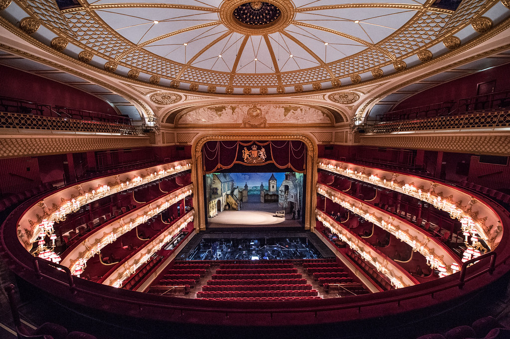
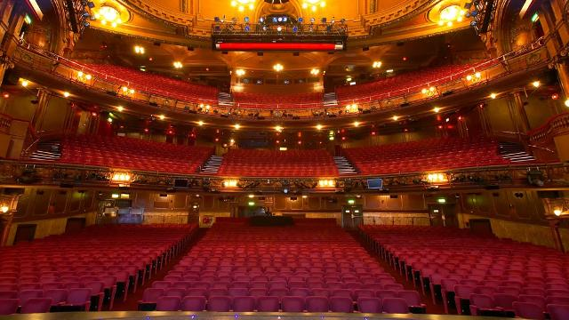
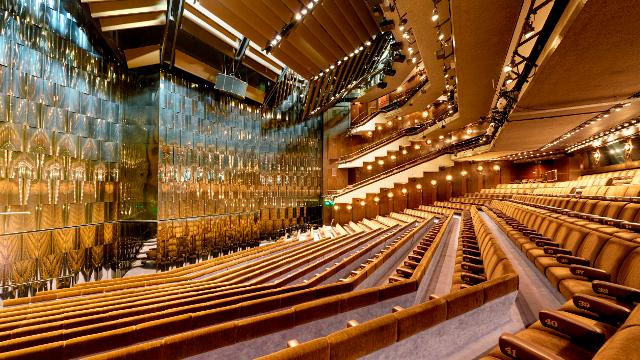

|  |


|
|---|
London is highly regarded for its vibrant, world-class film and theater scene. The city is home to some of the most famous theaters in the world, which have put on productions such as Les Misérables, The Lion King, The Phantom of the Opera, and The Color Purple. No matter what theater visitors choose to go to, they are bound to be immersed into the magic of the performance.
The Royal Ballet and Opera is regarded as one of London's finest institutes for opera and ballet performances. The theater, originally built in 1732, has displayed some of the most famous artists in classical music and dance because it is theater is known for being both The Royal Opera and The Royal Ballet. One of the most notable aspects of the opera house would be its golden auditorium. The room encapsulatest the very definition of the word "grandeur", with its red velvet seating and gold engravements in the walls. The Royal Balley and Opera also has one of the largest stages in all of Europe, which makes it suitable for elaborate set changes for each production.
While the main stage is arguably one of the greatest highlights of the opera house, its background facilities have gained notoriety as well. The building has some of the best rehersal spaces, dressing rooms, and costume departments that contribute to the almost seamless scene changes that the audience gets to witness during each production. Some of the most popular productions that have been performed at this institution include The Nutcracker, La Bohème, Swan Lake, and Sleeping Beauty.
There are a variety of ticket packages and deals that visitors can choose from that fit their specific needs. For a more comprehensive look at which packages may apply to you, vist the official Royal Ballet and Opera website. Prices may very depending on the package. Tickets can also be purchased over the phone or in person at the box-office.
While there is no strict dress code at facility, most guests typically choose to dress nicely. During evening performance in particular, most will find guests wearing suits and dresses. However, it is simply advised to look nice and comfortable.
Guests are not allowed to take any photos or videos during performances. This is to protect the integrity of the performance, as well as ensure that all guests are able to enjoy the show without any form of distractions. That being said, photos are allowed in the public areas before and after performances as long as they do not disrupt any of the other guests.
Yes, there are dining options available for guests to choose from. One of these include the Royal Opera House Restaurant. Another options would be Paul Hamlyn Hall, which provides guests with a variety of drinks and light snacks to choose from.
| Weekday | Hours |
|---|---|
| Monday | 12:00pm - End of evening performance |
| Tuesday | 12:00pm - End of evening performance |
| Wednesday | 12:00pm - End of evening performance |
| Thursday | 12:00pm - End of evening performance |
| Friday | 12:00pm - End of evening performance |
| Saturday | 12:00pm - End of evening performance |
| Sunday | 12:00pm - End of evening performance |
| Weekday | Hours |
|---|---|
| Monday | 12:00pm-10:00pm |
| Tuesday | 12:00pm-10:00pm |
| Wednesday | 12:00pm-10:00pm |
| Thursday | 12:00pm-10:00pm |
| Friday | 12:00pm-10:00pm |
| Saturday | 12:00pm-10:00pm |
| Sunday | 12:00pm-6:00pm |
The London Palladium is another one of London's most recognizeable and historic theaters. It was designed and constructed by Frank Matcham, and officially opened in 1910. The Palladium is recognized for its large auditorium that has a large and opulent chandelier hanging from the ceiling. Additionally, the theater is highly celebrated for putting on some of the most famous productions from a wide range of musicals and plays. Some of these include The Sound of Music, The Wizard of Oz, Cats, and Mary Poppins. These performances have also included the talents of many popular figures in both the performance and music industries such as Elain Page, Judi Dench, Elton John, and Madonna.
The theater is also recognized for its production of the Royal Variety Performance. The event is so special that it is attended by the British royal family every year. This special show includes performances from artists across a multitude of genres, making it an evening of music, comedy, and dancing.
The London Palladium hosts a wide range of shows throughout the year. Visit the official London Palladium website in order to find a show, date, and time that best suits your interests. It is important to keep in mind that once a ticket is purchased, it is non-refundable. However, it can be exchange for a ticket on a different date.
On average, a show at the Palladium can last anywhere between 2 to 2.5 hours. This includes a 15-20 minute break period at some point during the performance. This can vary between performances, so it is advised that all guests check their tickets so they can be absolutely sure of their show's runtime.
Whether or not a show has an age restriction is dependent on the production. There are certainly plenty of shows that are perfectly fine for families with young children to attend, while the ones with more serious and mature subject matters may be restricted to those above a certain age. When purchasing tickets for shows, it is important to carefully read the details in order to know if there are any restrictions that needs to be kept in mind.
| Weekday | Hours |
|---|---|
| Monday | 12:00pm-7:45pm |
| Tuesday | 12:00pm-7:45pm |
| Wednesday | 12:00pm-7:45pm |
| Thursday | 12:00pm-7:45pm |
| Friday | 12:00pm-7:45pm |
| Saturday | 12:00pm-7:45pm |
| Sunday | 12:00pm-6:00pm |
The Royal Albert Hall, which was founded in 1871, was named in honor of Prince Albert, who was the consort for Queen Victoria. The prestigious hall is widely recognized for its intricate architecture and dome constructed of iron and glass. The hall hosts a variety of performances, including musicals, ballets, classical performances, and rock concerts. Because of its large capacity and excellent acoustics, the Royal Albert Hall is considered to be one of the greatest venues in the world because of the immersive and enhanced listening experience it provides for guests.
In the venue's existence, it has hosted some of the most notable events in British history. One of the most important ones would be the annual BBC Proms, which is a series of classical performances that takes place during the summer. The Royal Albert Hall has also hosted some of the biggest names in music, including Elton John, The Beatles, Jimi Hendrix, Led Zepplin, and Andrea Bocelli. Additional events include charity galas and award ceremonies.
To see a show at Royal Albert hall, tickets can be purchased at the offical Royal Albert Hall website. There, guests can choose a date, time, and seat that best suits their interests.
Ticket prices are dependent on the show, date, and the seating assignment. Prices can range anywhere between £10 to £150. In some cases, tickets can cost much more than this if premium tickets are purchased.
While Royal Albert Hall does not have a strict dress code, those who go to watch a performance in the evening often choose to dress in formal attire. For more casual performances, guests might where nice and casual clothing. Ultimately, it is just recommended to look neat upon arrival.
| Weekday | Hours |
|---|---|
| Monday | 9:00am-9:00pm |
| Tuesday | 9:00am-9:00pm |
| Wednesday | 9:00am-9:00pm |
| Thursday | 9:00am-9:00pm |
| Friday | 9:00am-9:00pm |
| Saturday | 9:00am-9:00pm |
| Sunday | 9:00am-9:00pm |
There are various bars cafes, and restuarants located throughout Royal Albert Hall that provide guests with different food and drink options. Guests can choose from different wines and beers, soft drinks, and light snacks to enjoy before or after a performance.
The length of a performance typically depends on the type of events. On average, a performance usually lasts approximately 2 to 2.5 hours with a 15-20 minute break. There are certain special events, an example being BBC Proms, that will end up exceeding this time range.